DISCOGRAFIA
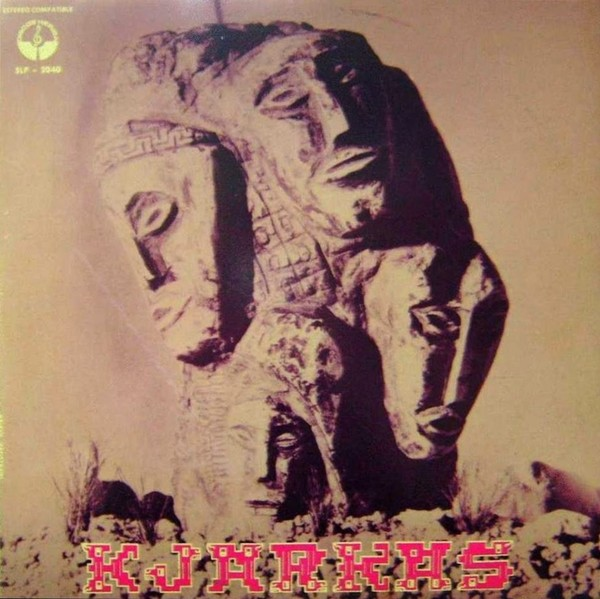
BOLIVIA ( 1976 )
- Bolivia (Huayño)
- Primer Amor (Huayño)
- Chilly (Tonada Cacharpaya)
- Cutimuy (Kaluyo Cacharpaya)
- Leyenda del Amor (Huayño)
- Para Cantarle A La Patria (Bailecito)
- Deje mi Querencia (Huayño)
- Pachamama (Yaravi)
- Cacharparihuay (Cacharpaya)
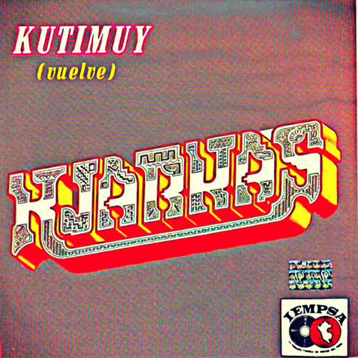
KUTIMUY ( 1977 )
- Kutimuy (Vuelve)
- Killa Wanuy (Muerte de la Luna)
- Tata Inti (Padre Sol)
- Camino de la Montaña
- Manuel Triste
- Fantasia
- Renacer a la Vida
- Debajo de la Enrramada
- Antawara
- Tinku
- Inti Nan
- Burro Villanciquero

SUEÑO MILENARIO DE LOS ANDES ( 1977 )
- Tatalitu
- Samay
- Kuraka
- Carnaval Grande
- Katari Umaña
- Monte Punku
- Waca Kjaty
- Mosoj Hijaychouma
- Destino de mi Pueblo
- Ella Es
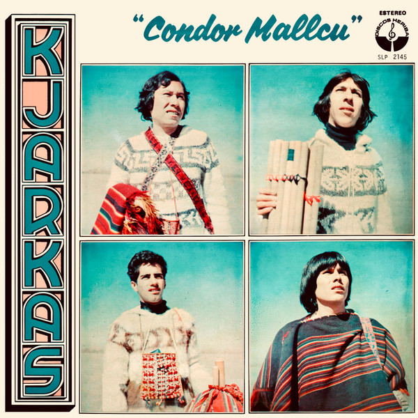
CONDOR MALLCU ( 1980 )
- Pequeño Amor
- Cóndor Mallcu
- El Destino de mi Pueblo
- Jochi Pintao
- Por un Sueño de Amor
- Cuando Llega el Amor
- Ella Es
- Tutuma
- Toyos
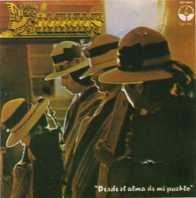
DESDE EL ALMA DE MI PUEBLO ( 1981 )
- Por un Sueño de Amor
- Chullpara
- Sunch'u T'ikitay
- En un Abril
- Sanch'a Mayu
- Desde el Alma de mi Pueblo
- Vientos del Sur
- Tierra de Nostalgias
- K'illa Khoyllu
- Pachakamac
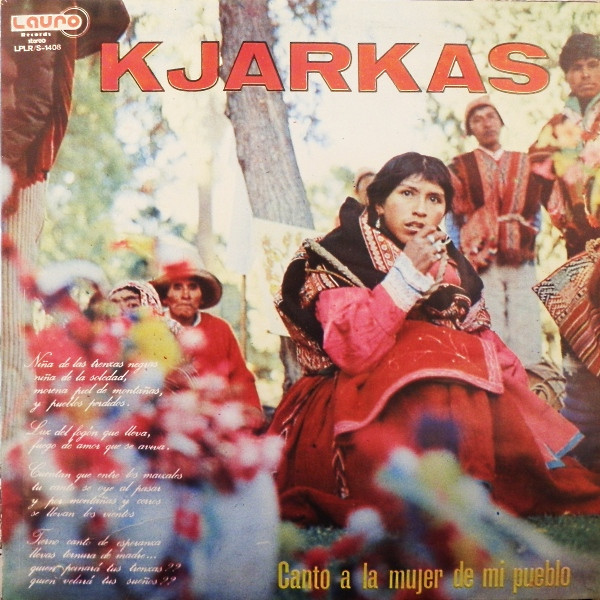
CANTO A LA MUJER DE MI PUEBLO ( 1982 )
- Wayayay
- Siempre he de Adorarte
- Por un Mundo Nuevo
- Tata Sabaya
- Phuru Runas
- Surimana
- Canto A La Mujer De Mi Pueblo
- Llorando Se Fue
- Mamita Surumi
- Capinoteña
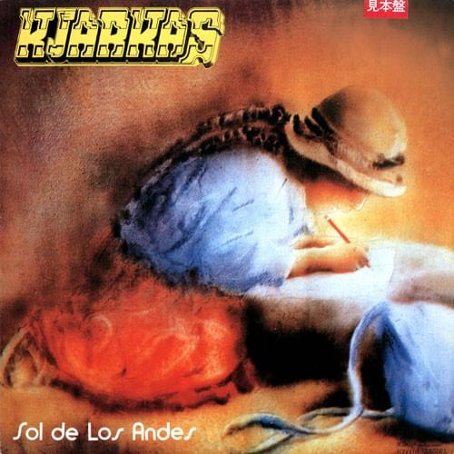
SOL DE LOS ANDES ( 1983 )
- La ventana
- Oruro
- Niña Mia
- Tormento
- Viru Viru
- Sol De Los Andes
- En la Soledad
- Ch'ulla
- Muchacha de Alas Blancas
- Chapara
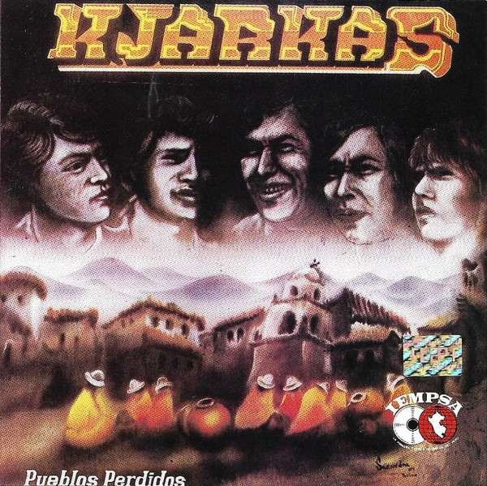
PUEBLOS PERDIDOS ( 1984 )
- Flor de Potosi
- El Adios
- Florcita Azul
- El Dia que yo me Vaya
- Con la Puerta Cerrada
- Peublos Perdidos
- Pasiones En Tropel
- Vieven en Mi
- Hombre de la Montaña
- Supaycuna
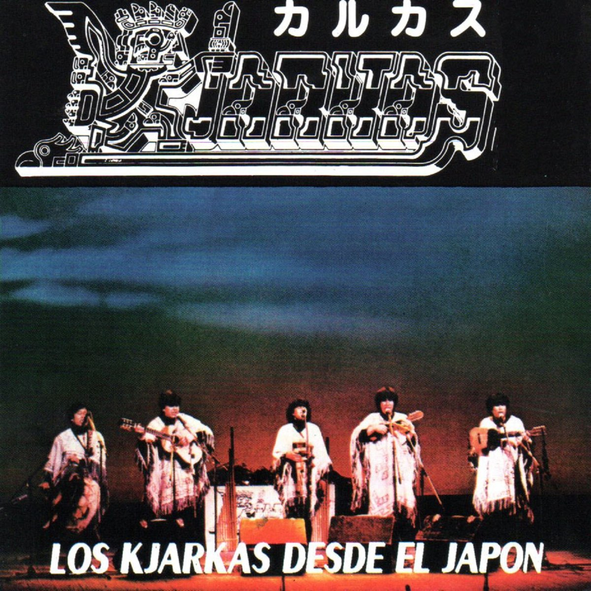
LOS KJARKAS DESDE EL JAPON ( 1985 )
- Jiyaway Zambita (Huayño)
- Esperanzas (Chuntunqui)
- Viva Cochabamba (Huayño)
- Muchacha Ojos Tristes (Aire de Cueca)
- Pequeña Aymarita (Tonada)
- Maria Amanecer (Chuntunqui)
- K'oya Mamay (Aire de Cueca)
- Alborada De Amor (Huayño)
- Illapas (Trote)
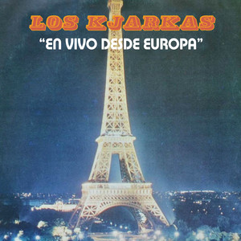
EN VIVO DESDE EUROPA ( 1987 )
- Wayayay - En Vivo
- Surimana - En Vivo
- Canto a la mujer de mi Pueblo
- Phuru Runa - En Vivo
- Jocheo ( Chovena ) - En Vivo
- Palomita - En Vivo
- Llorando se Fue - En Vivo
- Siempre he de Adorarte - En Vivo
- Por un Mundo Nuevo - En Vivo
- La Oracion del Pajarito - En Vivo
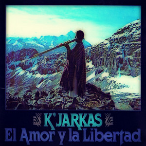
EL AMOR Y LA LIBERTAD ( 1987 )
- El Amor y la Libertad
- Mi Santa Cruz
- Al Final
- Contra el Viento
- Recuerdos
- Tiempo al Tiempo
- Tarija
- Corazón a Corazón
- Dejaras
- Sucre
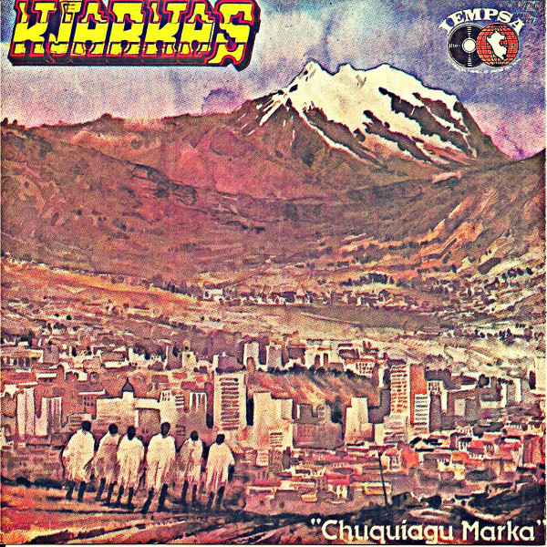
CHUQUIAGO MARKA ( 1988 )
- Chuquiago Marka
- Latino América
- Sin Ella
- Quiero Saber
- Libre al Viento
- Yuyariway Urpi
- Camargo
- Requiem para un Pueblo
- Tomas Katari
- El Picaflor